← Index · ← Previous · Next →
Authors: Milan Žukovič
Type: theory · Category: statistical mechanics · PDF: https://arxiv.org/pdf/2605.20990v1
Analysis basis: full PDF text, analyzed in chunks
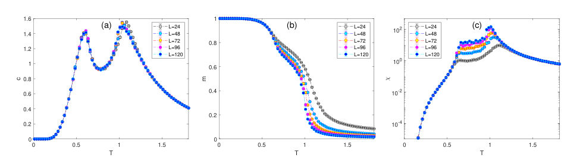
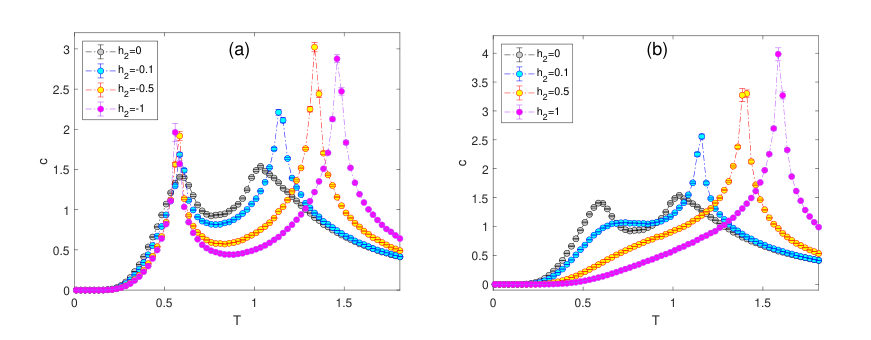
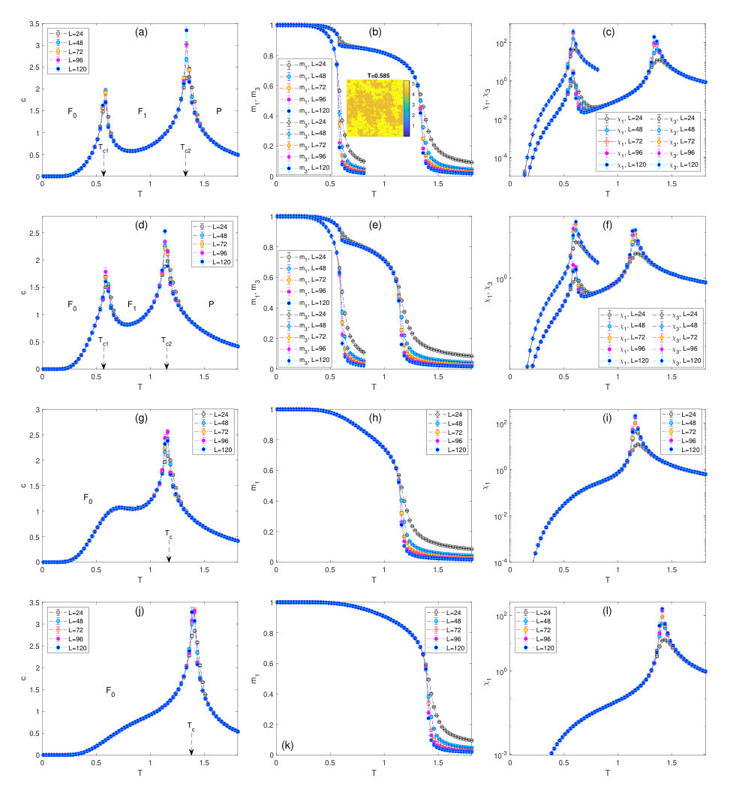
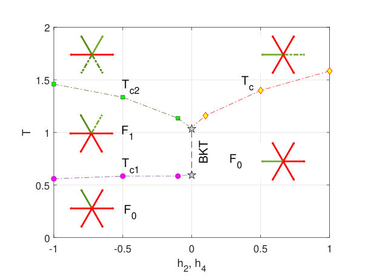
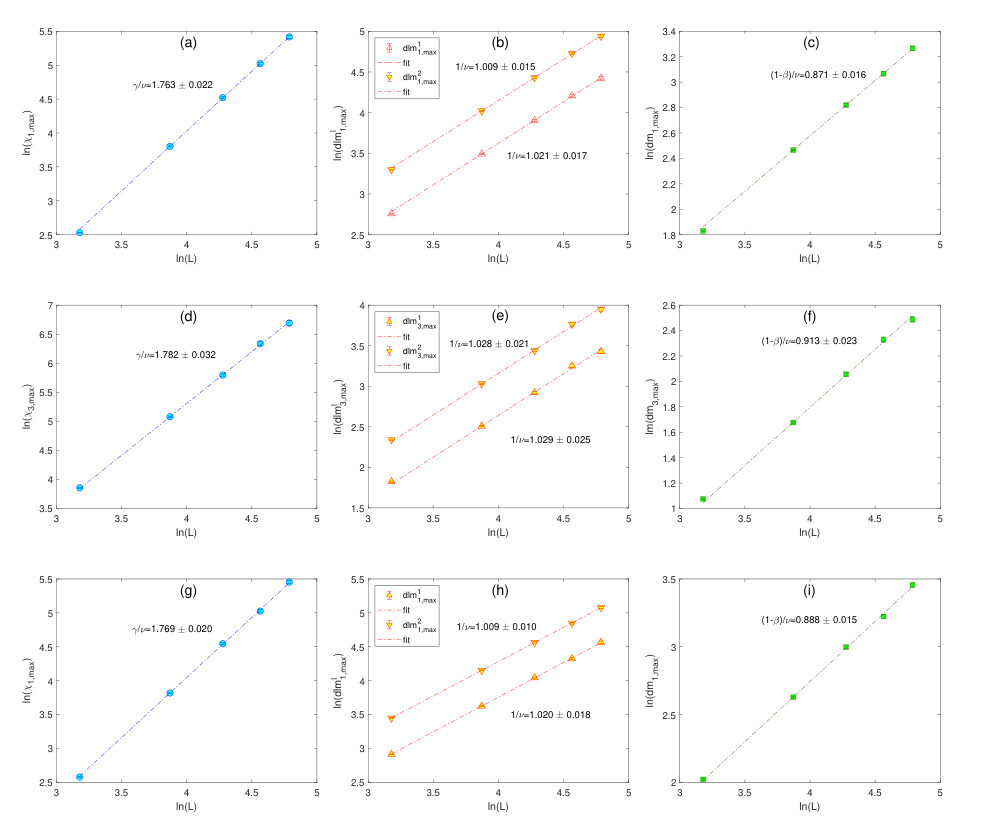
Summary. This paper explores how adding a p-fold symmetry-breaking field to the 2D q-state clock model reshapes its phase diagram. It demonstrates that these fields can destroy the topological BKT phase and replace it with conventional long-range order, with the specific transition type depending on the competition between the intrinsic and imposed symmetries.
Why it may be interesting. not directly relevant
Main problem. Investigating how competing discrete anisotropies (intrinsic Zq symmetry vs. external Zp crystalline fields) affect the phase transitions and the stability of the BKT phase in the 2D q-state clock model.
Main result. Even weak crystalline fields suppress the BKT phase and induce transitions to long-range order, with the phase diagram being governed by the competition between locking mechanisms rather than symmetry alone. Specifically, for q=6, p=2, the sign of the field determines whether there is a single transition (h2 > 0) or a two-step ordering process (h2 < 0).
Method. Monte Carlo simulations using the Metropolis algorithm combined with finite-size scaling (FSS) analysis to determine critical exponents and universality classes.
Model / system. A two-dimensional q-state clock model on a square lattice with an additional p-fold crystalline field term, described by the Hamiltonian H = -J sum cos(theta_i - theta_j) - hp sum cos(p*theta_i).
Key observables. Specific heat, generalized magnetizations (m1, m3), magnetic susceptibilities, and logarithmic derivatives of magnetization moments.
Important parameters / regimes. Temperature (T/J), crystalline field strength (hp), symmetry indices (p, q), and lattice size (L).
Assumptions / limitations. The study assumes the system is in the strong-anisotropy limit of generalized XY models and focuses on the interplay between discrete symmetries.
Figures summary. Figures show temperature dependence of specific heat, magnetization, and susceptibility for the isotropic model; phase diagrams and specific heat peaks for p=2 (showing single vs. double transitions); and FSS analysis of critical exponent ratios for p=3.
Paper structure. The paper introduces the model and the problem of competing anisotropies, details the Monte Carlo methodology, presents results for the p=2 case (distinguishing between positive and negative field strengths), analyzes the p=3 case (identifying Potts criticality), and concludes with a discussion on the instability of the BKT phase and the role of finite-size effects.
We study the two-dimensional $q$-state clock model in the presence of an additional $p$-fold symmetry-breaking crystalline field using Monte Carlo simulations. While the pure clock model exhibits Berezinskii--Kosterlitz--Thouless (BKT) transitions for sufficiently large $q$, the effect of competing discrete anisotropies on this topological phase remains nontrivial. We show that even weak crystalline fields qualitatively modify the phase diagram by suppressing the BKT phase and inducing transitions to states with true long-range order. The resulting behavior depends sensitively on the interplay between the intrinsic $\mathbb{Z}_q$ symmetry and the imposed $\mathbb{Z}_p$ anisotropy. In particular, in the six-state clock model for $p=2$ we observe qualitatively different scenarios depending on the sign of the field: a single transition for $h_2>0$ and a two-step ordering process for $h_2<0$ with an intermediate ordered phase. For $p=3$, the system exhibits a direct transition consistent with three-state Potts criticality. These results demonstrate that the phase structure cannot be inferred from symmetry considerations alone, but is governed by the competition between distinct locking mechanisms. Our findings provide a discrete counterpart to the multi-frequency sine-Gordon description of generalized $XY$ models and illustrate how additional anisotropies reshape topological phase transitions in two dimensions.
Authors: Vadym Apalkov, Tapash Chakraborty
Type: theory · Category: strongly correlated electrons · PDF: https://arxiv.org/pdf/2605.21462v1
Analysis basis: full PDF text, analyzed in chunks
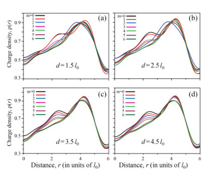
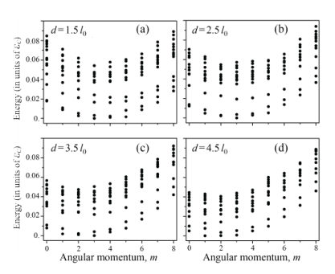
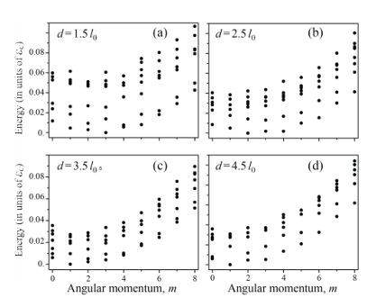
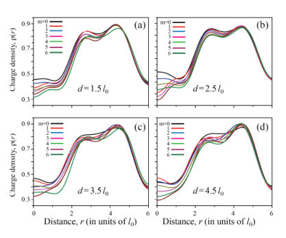
Summary. This paper proposes a theoretical method to detect e/4 anyons in the Pfaffian state by coupling the state to a quantum dot. By analyzing the energy dispersion and charge density, the authors show that the interaction between the dot and the fluid provides clear signatures of these elusive quasiparticles. This approach could potentially be verified using photoluminescence spectroscopy.
Why it may be interesting. not directly relevant
Main problem. The study aims to identify discernible signatures of e/4 fractionally charged anyons in a Pfaffian-Laughlin state by investigating their energy dispersion and charge density distribution.
Main result. The authors observe clearly gapped energy branches in the energy spectra, where branch splitting is driven by inter-quasihole interactions, and estimate the e/4 quasihole creation energy to be approximately 0.014 epsilon_C.
Method. The researchers use exact diagonalization of the interaction Hamiltonian within a spherical geometry to calculate many-electron energy spectra and electron density distributions.
Model / system. A bilayer system consisting of a 2D electron layer in an incompressible Pfaffian state at filling factor nu = 1/2, coupled via Coulomb interactions to a nearby 2D quantum dot with a parabolic confinement potential.
Key observables. Energy dispersion, charge density distribution, and quasihole creation energy.
Important parameters / regimes. Filling factor nu = 1/2, magnetic field B = 15 T, interlayer distance d (ranging from 1.5l0 to 4.5l0), and Haldane pseudopotentials.
Assumptions / limitations. The electrons are assumed to be spinless due to large Zeeman energy, and the system is treated as a finite electron system.
Figures summary. Figure 1 shows energy spectra for a QD with one electron at various distances; Figure 2 shows electron density distribution for the one-electron case; Figure 3 shows energy spectra for a QD containing an exciton.
Paper structure. The paper introduces the problem of anyon identification, describes the theoretical model of a QD-coupled Pfaffian state, presents numerical results for energy spectra and density distributions for both electron and exciton-filled dots, and concludes with implications for PL spectroscopy.
Understanding the nature of quasihole excitations, i.e., anyons that have fractional charge and statistics, has been a challenging problem in condensed matter physics. Our theoretical approach to this problem has been to consider a quantum dot, containing a few charged particles, coupled to the incompressible fluid. It has provided important insights into the energetics of Laughlin quasiholes. Photoluminescence (PL) spectroscopy studies of this system have been able to probe these quasiholes that have confirmed our expectations. Turning to the Pfaffian state, we now observe that such a system is also able to provide valuable information about the Pfaffian quasiholes, viz., the energy dispersion, the charge density distribution and the quasihole creation energy. The energy dispersion of e/4 quasiholes derived here, clearly reflect the interaction between the quantum dot and the incompressible Pfaffian state. PL spectroscopy experiments on the 5/2 Pfaffian-Laughlin state could perhaps shed light on the energetics of these elusive quasiparticles.
Authors: Dongjin Oh, Stefan Enzner, Lennart Klebl, Harley D. Scammell, Julian Ingham, Tim Wehling, Giorgio Sangiovanni, Ronny Thomale, Ahmet Kemal Demir, Connor Occhialini, Dirk Wulferding, Ziqiang Wang, Andrea C. Salinas, Stephen D. Wilson, Riccardo Comin
Type: both · Category: strongly correlated electrons · PDF: https://arxiv.org/pdf/2605.20573v1
Analysis basis: full PDF text, analyzed in chunks
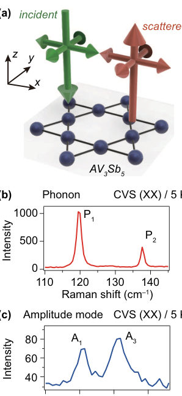
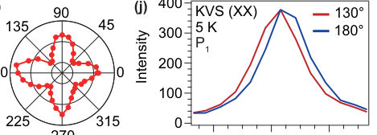
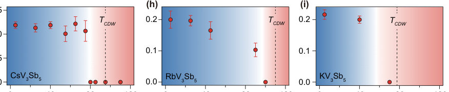
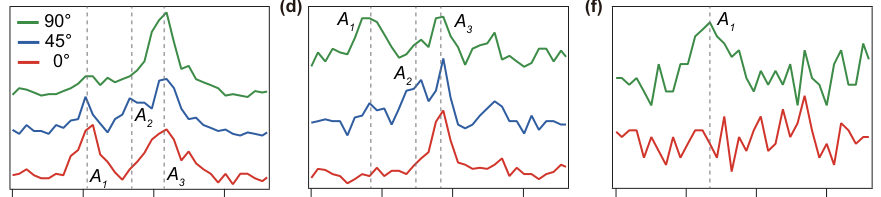
Summary. This paper investigates the difference between lattice and charge excitations in AV3Sb5 kagome superconductors using polarized Raman spectroscopy. It finds that while the splitting of certain phonon modes is a universal feature across Cs, Rb, and K variants, the charge density wave excitations are highly material-dependent. This distinction provides new clues into how symmetry breaking emerges in these correlated electronic systems.
Why it may be interesting. not directly relevant
Main problem. The microscopic origin of the distinct electronic symmetry-breaking phenomena and the material-dependent charge density wave (CDW) orders in AV3Sb5 (A=Cs, Rb, K) kagome superconductors remains elusive.
Main result. The study reveals that while the lifting of the E2g phonon degeneracy is a ubiquitous lattice anomaly across all three compounds, the collective CDW amplitude modes exhibit markedly different polarization dependences depending on the alkali-metal species.
Method. Angle-resolved polarized Raman spectroscopy (ARPRS) combined with first-principles calculations (DFPT) and an effective Hamiltonian model.
Model / system. The physical system is the family of AV3Sb5 (A=Cs, Rb, K) kagome superconductors, which feature both superconductivity and charge density wave phases with complex symmetry breaking.
Key observables. Phonon modes (E2g doublet splitting and A1g singlet), CDW amplitude modes, and polarization-resolved Raman spectra (XX and XY geometries).
Important parameters / regimes. Polarization angle (theta), temperature (T), Raman shift (cm-1), and phonon frequency modulation.
Assumptions / limitations. The analysis assumes the observed phonon shifts are due to spectral overlap of independent modes rather than experimental misalignment.
Figures summary. Fig 1 shows the experimental geometry and basic Raman spectra; Fig 2 demonstrates the fourfold modulation of the P1 phonon frequency across Cs, Rb, and K compounds; Fig 3 provides detailed Lorentzian fitting of the P1 phonon splitting.
Paper structure. The paper introduces the problem of symmetry breaking in AV3Sb5, presents experimental Raman spectroscopy results showing universal lattice anomalies and distinct charge dynamics, and concludes with theoretical modeling and implications for charge order structures.
The kagome superconductor family AV3Sb5 (A=Cs, Rb, K) provides a rich platform for exploring diverse electronic symmetry breaking phenomena, including superconductivity and various forms of density wave orders. Although these compounds share the identical lattice structure in the normal state, they exhibit distinct forms of symmetry breaking upon entering the charge density wave (CDW) phase, and the microscopic origin of which remain elusive. Here, we investigate the lattice and charge degrees of freedom in AV3Sb5 using angle-resolved polarized Raman spectroscopy. Our comprehensive polarization-resolved measurements reveal that the lifting of the twofold-degeneracy of the E2g phonon mode in the CDW phase-previously reported only in CsV3Sb5 with a 3 GHz splitting-also appears ubiquitously in the other two compounds. In contrast, the collective CDW excitations exhibit markedly different polarization dependences depending on the alkali-metal species. These distinct behaviors in the lattice and charge channels provide crucial insight into the enigmatic material-dependent symmetry breaking phenomena that appear in the CDW phase. Furthermore, our experiments, together with first-principles calculations and an effective Hamiltonian model, shed light on the nature of the charge order structure in AV3Sb5 kagome superconductors.
Authors: Austin Braniff, Fengqi You, Yuhe Tian
Type: both · Category: quantum information and computing · PDF: https://arxiv.org/pdf/2605.21213v1
Analysis basis: full PDF text, analyzed in chunks
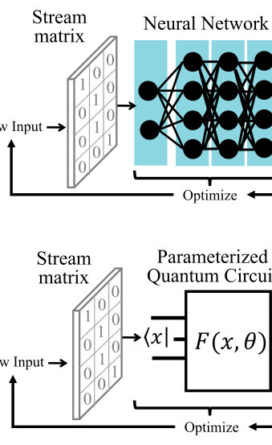
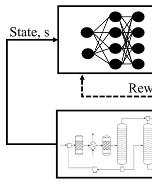
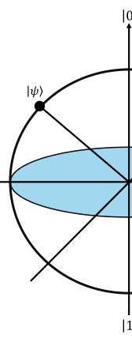
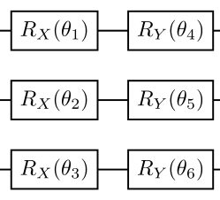
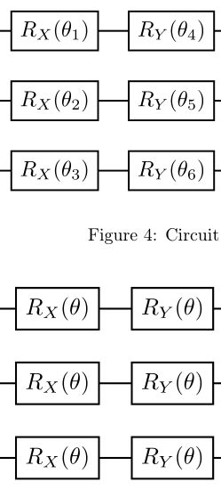
Summary. This paper proposes a quantum reinforcement learning framework for optimizing chemical process flowsheets. By introducing new encoding strategies, it overcomes previous qubit scaling limitations, showing that quantum circuits can match classical performance with significantly fewer parameters.
Why it may be interesting. not directly relevant
Main problem. The paper addresses the scalability bottleneck in using quantum reinforcement learning for combinatorial process synthesis, where previous qubit requirements scaled poorly with problem complexity.
Main result. The authors demonstrate that new state encoding algorithms decouple qubit requirements from problem size, allowing quantum-enhanced RL to achieve competitive performance and improved parameter efficiency compared to classical Deep Q-Networks.
Method. The work introduces a hybrid quantum-classical framework using Parameterized Quantum Circuits (PQCs) as value-function approximators, employing data re-uploading and multi-axis encoding strategies.
Model / system. The problem is modeled as a Markov Decision Process (MDP) for chemical process synthesis, specifically applied to a hydrodealkylation (HDA) reaction involving toluene, hydrogen, and methane.
Key observables. Performance metrics include the number of optimal, unique, and feasible solutions found, as well as the episode number of first discovery and total runtime.
Important parameters / regimes. Key parameters include qubit count, circuit depth, number of input features, rotation gate angles, discount factor, and learning rate.
Assumptions / limitations. The study assumes the HDA reaction occurs in the vapor phase with ideal vapor-liquid equilibrium and that the process synthesis can be discretized into a sequential decision-making task.
Figures summary. Figure 1 compares classical and quantum RL; Figure 2 shows RL nomenclature; Figures 3-6 illustrate the Bloch sphere, PQC architectures, and data re-uploading; Figures 8-10 show the RL workflow and specific encoding variants; Figure 11 shows an optimal flowsheet.
Paper structure. The paper introduces the process synthesis problem, defines the MDP framework, details the classical DQN baseline, presents the proposed quantum-enhanced RL variants and encoding strategies, evaluates performance across increasing design complexities, and concludes with a discussion on scalability and hardware limitations.
In this work, we present quantum reinforcement learning (RL) as a solution strategy for process synthesis problems. Building on our prior work, we develop a generalized framework that formally poses process synthesis as a Markov decision process and introduces quantum-enhanced RL algorithms to solve it with improved scalability. Earlier implementations of quantum-based RL for process synthesis were limited by qubit requirements, which scaled poorly with problem complexity. This work overcomes this challenge by introducing state encoding algorithms to decouple qubit requirements from problem size. A classical RL-based solution strategy is used as a baseline to benchmark the quantum algorithms under identical training conditions. All algorithms are evaluated across a flowsheet synthesis problem of increasing unit counts to analyze their performance and scalability. Results show that all approaches are capable of identifying the optimal flowsheet designs in small design spaces. For moderate-scale unit counts, quantum approaches demonstrate competitive performance on a per-episode basis and improved efficiency on a per-parameter basis versus the classical RL benchmark. This work provides a foundation for future quantum computing applications within process systems engineering, establishes a controlled benchmark for comparing classical and quantum algorithms, and shows that the proposed quantum variants remain competitive for the process synthesis problem examined in this work.
Authors: Jan Heinrich, Andreas Rückriegel, Peter Kopietz
Type: theory · Category: strongly correlated electrons · PDF: https://arxiv.org/pdf/2605.21277v1
Analysis basis: full PDF text, analyzed in chunks
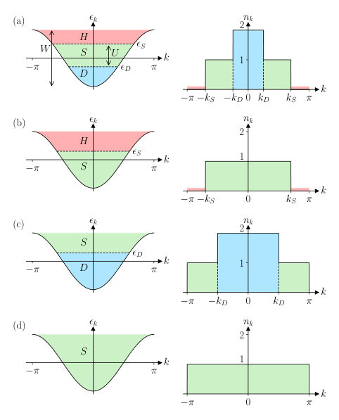
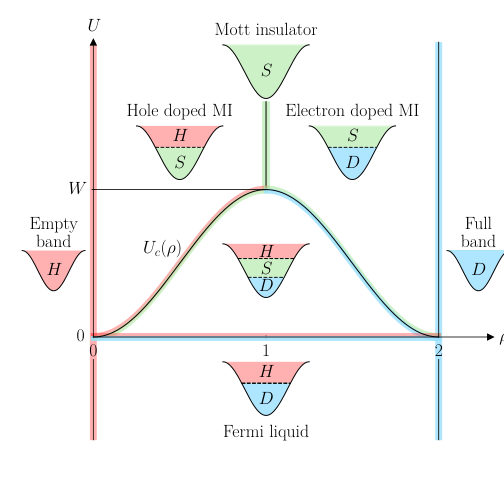
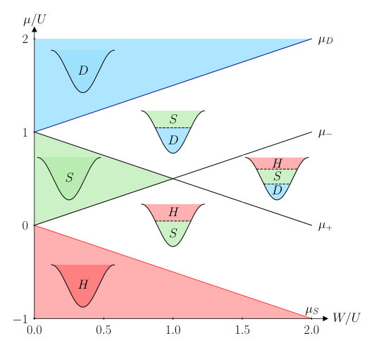
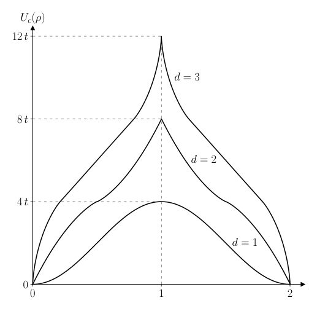
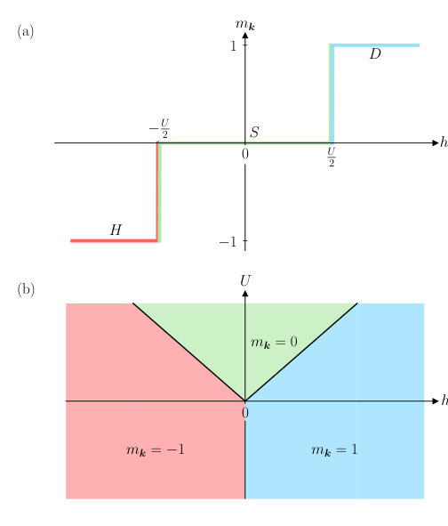
Summary. This paper explores how momentum-dependent interactions modify the electronic structure of the Hatsugai-Kohmoto model. It demonstrates that these interactions can induce a partially flat energy band, providing a theoretical mechanism for fermion condensation. The study also provides a mapping between the electronic model and a generalized Ising model.
Why it may be interesting. not directly relevant
Main problem. Investigating whether momentum-mixing Landau interactions in a generalized Hatsugai-Kohmoto model lead to the emergence of a partially flat energy band (fermion condensation).
Main result. The study finds that momentum-mixing interactions smooth out magnetic domain walls in a pseudospin representation, resulting in a partially flat electronic band consistent with the fermion condensation scenario.
Method. The authors employ a self-consistent mean-field analysis and a pseudospin formulation that maps the model onto a generalized Ising model in reciprocal space.
Model / system. A generalized Hatsugai-Kohmoto (HKL) model describing electrons on a d-dimensional hypercubic lattice with kinetic energy, Hubbard-like interaction (U), and momentum-mixing Landau-type interactions.
Key observables. Momentum distribution (n_k), Fermi surfaces, energy dispersion, pseudomagnetization (m_k), and the excitation gap (Delta).
Important parameters / regimes. Interaction strength (U), bandwidth (W), particle density (rho), and momentum-mixing interaction parameters (f_kk').
Assumptions / limitations. The HKL model is not exactly solvable, necessitating a mean-field approximation; the interaction range is assumed to be finite in reciprocal space.
Figures summary. Figure 1 shows ground state configurations and momentum distributions for different phases (HSD, HS, SD, S); Figure 6 displays the local magnetic moment, effective magnetic field, and the phase diagram in the U vs. h_k plane.
Paper structure. The paper introduces the generalized HK model, develops a pseudospin mapping to an Ising model, performs a mean-field analysis to identify the fermion condensation phase, and concludes by proposing an exactly solvable variant of the model.
The Hatsugai-Kohmoto (HK) model is an exactly solvable electronic lattice model where the interaction between electrons with opposite spin is diagonal in momentum space. We generalize the HK model by introducing momentum-mixing Landau interactions. Within a self-consistent mean-field analysis we find that the ground state of this model exhibits a partially flat energy band, in agreement with the fermion condensation scenario proposed by Khodel and Shaginyan [JETP Lett. 51, 553 (1990)]. Inspired by Andersons pseudospin formulation of BCS theory, we show that the HK model with Landau interactions can be mapped onto a generalized Ising model where each site of the reciprocal lattice hosts two Ising spins. In the pseudospin picture the emergence of a partially flat electronic band corresponds to the smoothing of a magnetic domain wall. Moreover, guided by the pseudospin picture, we propose an exactly solvable variant of the HK model which has a unique ground state for all densities.
Authors: Adam Wills, Theodore J. Yoder, Isaac Chuang
Type: theory · Category: quantum information and computing · PDF: https://arxiv.org/pdf/2605.20346v1
Analysis basis: full PDF text, analyzed in chunks
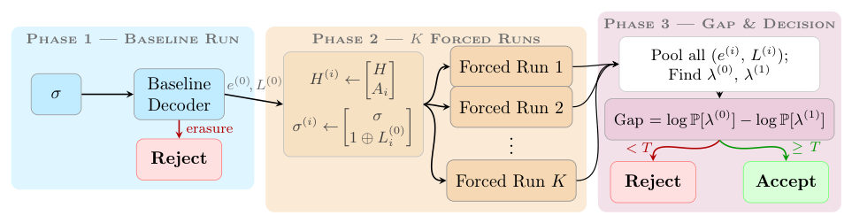
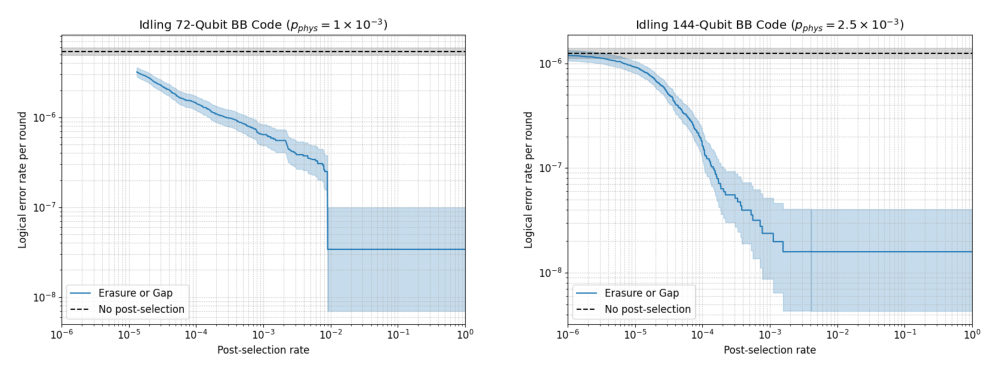
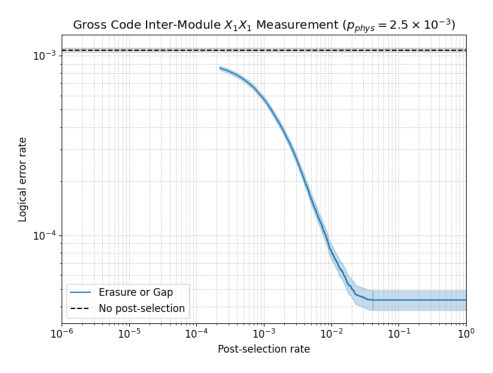
Summary. The paper introduces a new post-selection strategy for quantum LDPC codes that significantly reduces logical error rates with minimal computational overhead. By forcing the decoder to explore complementary logical outcomes, the method identifies and rejects unreliable decoding shots. This approach is particularly effective for high-rate codes and is compatible with efficient, FPGA-friendly decoders.
Why it may be interesting. not directly relevant
Main problem. Developing an efficient and lightweight post-selection strategy for high-rate quantum LDPC codes to reduce logical error rates without the high computational overhead of existing methods.
Main result. The proposed 'forced gap' strategy improves logical error rates by over a factor of 4 compared to previous strategies in the low post-selection regime (up to 1%) and scales linearly with the number of logical observables.
Method. A decoder-agnostic strategy involving a baseline decoding run followed by K additional runs where the decoder is forced to find corrections with complementary outcomes for each logical observable, using the Relay-BP decoder.
Model / system. Quantum Low-Density Parity-Check (LDPC) codes, specifically the 72-qubit and 144-qubit bivariate bicycle codes, under a circuit depolarizing noise model.
Key observables. Logical error rate, post-selection rate, and the 'Gap' (difference in log-likelihoods between the most-likely and second-most-likely logical classes).
Important parameters / regimes. Physical noise rates (p = 10^-3 and 2.5 x 10^-3), number of logical observables (K), and user-defined gap threshold (T).
Assumptions / limitations. The decoder is assumed to be able to operate on modified decoding instances; faults are assumed to occur independently; the 'Gap' is an approximation of the exact difference between logical class probabilities.
Figures summary. Figure 1 shows the flowchart of the forced gap strategy; Figure 2 plots logical error rates vs. post-selection rate for idling codes; Figure 3 shows logical error rates for various surgery instructions.
Paper structure. The paper introduces the problem of post-selection in high-rate LDPC codes, details the proposed forced gap algorithm, describes the Relay-BP decoder implementation and parameter optimization, presents benchmarking results on bivariate bicycle codes for both idling and surgery operations, and discusses future work regarding error floors and scaling.
We develop a simple and general post-selection strategy for high-rate quantum codes that is transferrable across decoders. After an initial baseline run, the decoder is re-run once per logical observable, and forced in these latter runs to provide a solution where the given observable has the complementary outcome. Shots are rejected that find logically complementary solutions with similar likelihoods compared to the baseline. Using the Relay-BP decoder, we benchmark the strategy on the $72$-qubit and $144$-qubit bivariate bicycle codes, as well as surgery gadgets for the latter. In comparison to previous post-selection strategies, our results offer an improved logical error rate by over a factor of $4$ on the same circuit and physical error rate, and at the same rate of post-selection. Our strategies are also lightweight, relying only on FPGA-friendly belief propagation, whereas the previous best used repeated rounds of a high-latency BP-OSD decoder.
Authors: Dmitry V. Chichinadze, Alexander Seidel, Zohar Nussinov
Type: theory · Category: strongly correlated electrons · PDF: https://arxiv.org/pdf/2605.20699v1
Analysis basis: full PDF text, analyzed in chunks
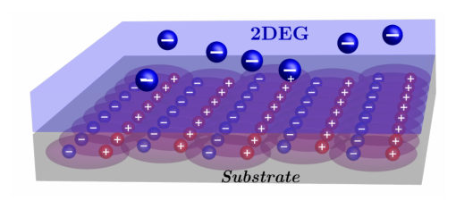
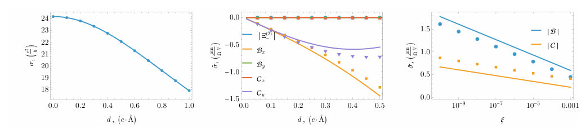
Summary. This paper proposes that the unexpectedly large nonlinear conductivity in 2D materials arises from electrons scattering off periodic electric dipoles in the substrate. The mechanism relies on a mathematical singularity in the scattering gradients, which naturally predicts the observed scale of 1 micro-ohm/volt.
Why it may be interesting. not directly relevant
Main problem. Existing theoretical frameworks cannot quantitatively explain the massive second-order nonlinear conductivities observed in 2D van der Waals heterostructures.
Main result. The authors identify a mechanism where electron scattering from a substrate-induced periodic dipole array leads to a singular enhancement of the nonlinear response due to logarithmic divergences in scattering probability gradients.
Method. The study uses a Boltzmann equation approach, T-matrix calculations to leading order in the dipole moment, and symmetry analysis to determine the conductivity tensor structure.
Model / system. A 2D isotropic Fermi gas in the xy-plane subject to both conventional short-range impurity scattering and a static periodic array of electric dipoles originating from a substrate.
Key observables. Linear conductivity (sigma) and nonlinear conductivity tensor components (specifically longitudinal response B and transverse Hall response C).
Important parameters / regimes. Dipole moment (d), impurity concentration (n_imp), Fermi momentum (kF), and the screening parameter (xi).
Assumptions / limitations. The 2D electron gas is assumed to be isotropic with a circular Fermi surface, and the dipole array is assumed to be periodic with uniform dipole moments and orientations.
Figures summary. Figure 1 shows a schematic of electrons in a 2D gas scattering from substrate dipoles. Figure 2 displays linear conductivity scaling with d^2, nonlinear tensor components as a function of d, and the logarithmic enhancement of nonlinear conductivity with the screening parameter.
Paper structure. The paper introduces the puzzle of giant nonlinearity, defines the physical model of dipole scattering, performs symmetry analysis, derives the nonlinear conductivity using the Boltzmann equation and T-matrix, and concludes with the identification of the singular enhancement mechanism.
Despite a surge of interest in the nonlinear transport in 2D materials, a fundamental puzzle remains: existing theoretical frameworks are unable to quantitatively account for the giant nonlinear conductivities ($\gtrsim 1 \frac{μ\text{m}}{Ω\text{V}}$) recently reported in 2D van der Waals heterostructures. Here, we introduce a mechanism based on electron scattering from a substrate-induced periodic dipole array. We show that the strict kinematic constraints, inherent to 2D scattering, lead to a singular enhancement of the nonlinear response, fundamentally dictating a natural scale of $1 \frac{μ\text{m}}{Ω\text{V}}$.
Authors: Danial Motlagh, Matthew Pocrnic
Type: theory · Category: quantum information and computing · PDF: https://arxiv.org/pdf/2605.20334v1
Analysis basis: full PDF text, analyzed in chunks
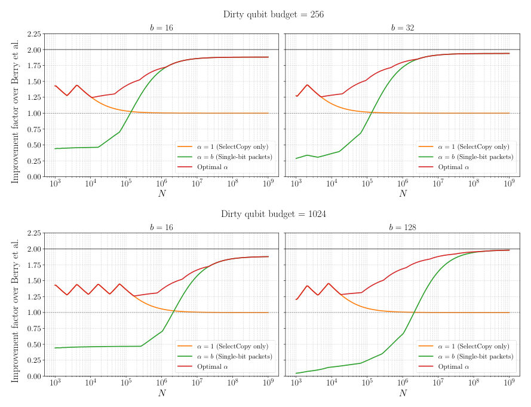
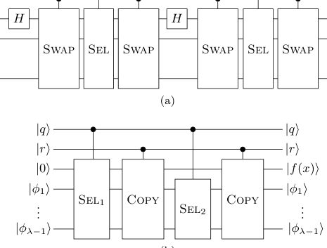
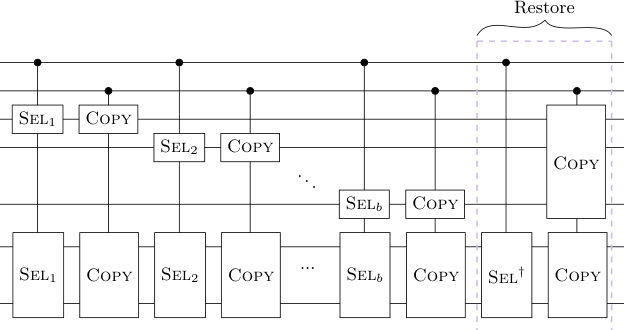
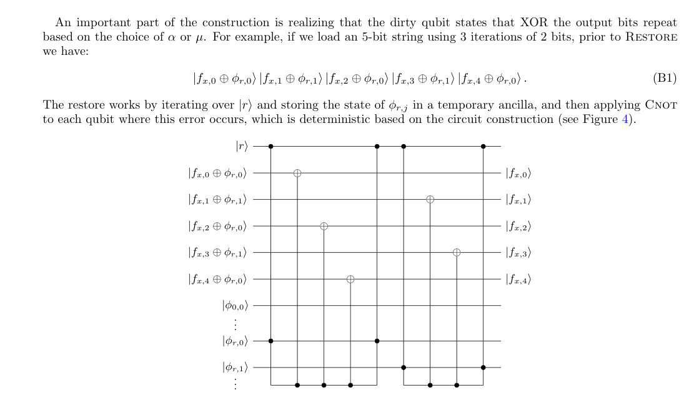
Summary. This paper proposes a way to significantly reduce the gate complexity of the QROM subroutine, which is a major bottleneck in many quantum algorithms. By replacing the standard SelectSwap architecture with a SelectCopy approach, the authors effectively halve the Toffoli cost in certain regimes. This allows for much more efficient data loading using available dirty ancilla qubits.
Why it may be interesting. not directly relevant
Main problem. The goal is to reduce the computational overhead, specifically the Toffoli gate cost, of the QROM (Quantum Read-Only Memory) subroutine in fault-tolerant quantum algorithms.
Main result. The authors achieve approximately a 50% reduction in the dominant Toffoli cost in the qubit-constrained regime, effectively matching the performance of clean-qubit QROM using dirty qubits.
Method. The paper introduces a 'SelectCopy' architecture to replace 'SelectSwap' and presents a parametric family of methods that treats a b-bit QROM as sequential smaller QROMs to optimize the cost based on available ancilla qubits.
Model / system. The work focuses on the algorithmic implementation of coherent table lookup (QROM) for loading N bitstrings of length b in superposition, utilizing both clean and dirty ancilla qubits.
Key observables. Toffoli gate count (non-Clifford cost) and the number of required ancilla qubits.
Important parameters / regimes. N (number of elements), b (bitstring length), lambda (sub-register parameter), and the availability of dirty vs. clean qubits.
Assumptions / limitations. Initial derivations assume N, b, and alpha are powers of 2; the efficiency is tied to the availability of dirty ancilla qubits.
Figures summary. Figure 1 compares the cost improvement of the new QROM against the previous state-of-the-art; Figure 2 shows circuit diagrams for the SelectCopy and SelectSwap constructions; Figure 4 illustrates the circuit for the Copy operation in the Restore process.
Paper structure. The paper identifies the QROM bottleneck, introduces the SelectCopy architecture, presents an optimization for the qubit-constrained regime, provides a parametric family of methods for cost interpolation, and concludes with a generalized theorem for non-power-of-2 parameters.
Table lookup, often referred to as quantum read only memory (QROM), is one of the most widely used subroutines in quantum algorithms, and constitutes the majority share of algorithmic overheads in most practical applications of quantum computers. It involves the coherent loading of $N$ bitstrings of length $b$ in superposition, and naively has a non-Clifford cost of $N$ Toffolis. It is known that given access to $b\, λ$ dirty qubits, one can reduce the Toffoli cost of QROM to $2\frac{N}λ + 4b(λ- 1)$. In this work, we first present an optimization to reduce this cost to $2\frac{N}λ + 2b(λ- 1) + 2λ-6$ by replacing the SelectSwap" architecture withSelectCopy". We then provide a further optimization for the qubit-constrained regime where the Toffoli cost is typically $\sim 2\frac{N}λ$, and reduce it to $\sim (1+\frac{1}{b})\frac{N}λ$, cutting the cost by approximately $50\%$ and effectively matching the performance of clean-qubit QROM using dirty qubits for practical values of $b$. Lastly, we provide a parametric family of methods that allow the interpolation of the prefactor of the $\frac{N}λ $ term from $2$ to ($\, 1+\frac{1}{b}\,$) to obtain the best cost for different qubit availability regimes.
Authors: Jiale Chen, Youyou Tu, Chengliang Xia, Jin Zhao, Hanghui Chen
Type: theory · Category: strongly correlated electrons · PDF: https://arxiv.org/pdf/2605.20985v1
Analysis basis: full PDF text, analyzed in chunks
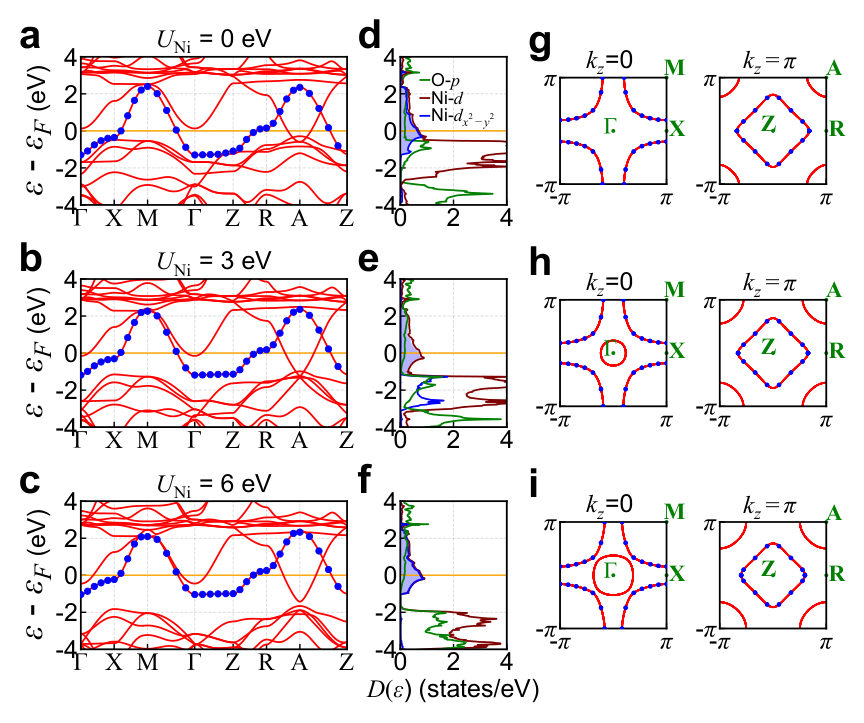
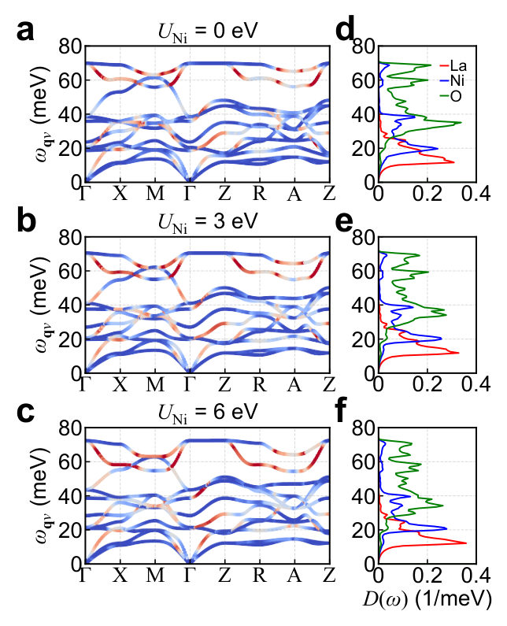
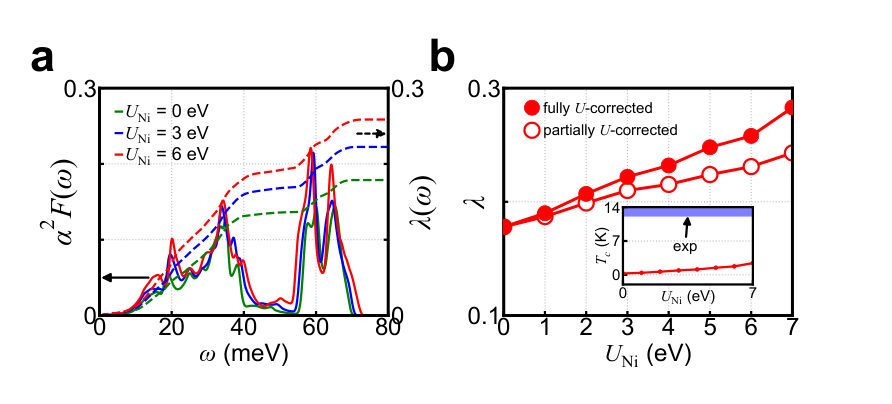
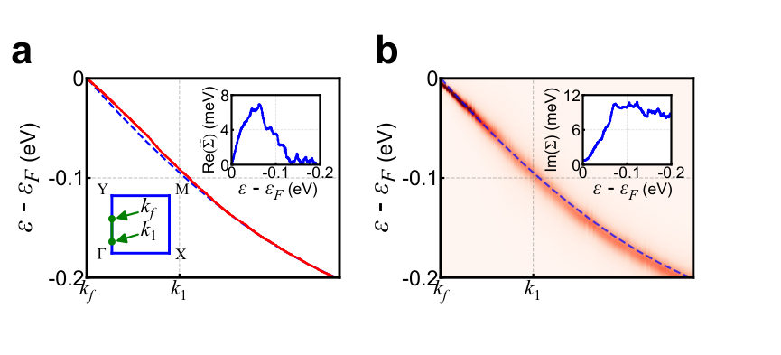
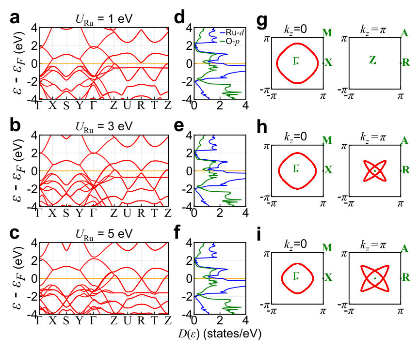
Summary. This paper presents a new algorithm that consistently applies Hubbard-U corrections to both electronic and phonon properties in strongly correlated materials. By applying this to nickelates and ruthenates, the authors show that such corrections are vital for accurately predicting structural stability and electron-phonon coupling strengths. This work helps resolve discrepancies between previous theoretical predictions and experimental observations of superconductivity.
Why it may be interesting. not directly relevant
Main problem. The study addresses the need for a consistent method to include Hubbard-U corrections in both electronic and lattice degrees of freedom to accurately model electron-phonon interactions in correlated materials.
Main result. The authors demonstrate that applying Hubbard-U corrections to the entire calculation (phonon spectrum and e-ph matrix elements) is essential to stabilize the structure of strained RuO2 and to reconcile theoretical e-ph coupling with experimental superconductivity temperatures in both nickelates and ruthenates.
Method. The researchers implemented an algorithm integrating the DFT+U method with the finite-displacement method using Numerical Atomic Orbital (NAO) basis sets to calculate phonons and electron-phonon g matrices.
Model / system. The study focuses on two prototypical correlated materials: 20% hole-doped infinite-layer nickelates (LaNiO2) and strained ruthenium dioxide (RuO2) thin films on TiO2 substrates.
Key observables. Electron-phonon coupling constant (lambda), phonon dispersion/spectrum, electron-phonon g matrices, superconducting transition temperature (Tc), and electronic self-energy.
Important parameters / regimes. Hubbard U parameters (U_Ni and U_Ru), hole-doping concentration, and substrate-induced strain.
Assumptions / limitations. The calculation of Tc assumes the Coulomb pseudopotential (mu*) is zero due to the explicit inclusion of the Hubbard U; the study also focuses on bands close to the Fermi level.
Figures summary. Figure 1 shows the evolution of electronic properties and Fermi surface for LaNiO2 with varying U; other figures illustrate the evolution of e-ph coupling, phonon DOS, and electronic self-energy.
Paper structure. The paper introduces the computational challenge, describes the implementation of the integrated DFT+U and finite-displacement algorithm, applies the method to LaNiO2 and RuO2 to analyze electronic and phonon-channel effects, and concludes with the necessity of self-consistent U-corrections.
Although the density functional theory plus Hubbard $U$ correction method (DFT+U) is broadly used to study electronic structure of strongly correlated materials, the extension of this method to electron-phonon $g$ matrices has received limited attention. Here, we implement an algorithm that integrates DFT+U method with the finite-displacement method for the calculations of phonons and electron-phonon $g$ matrices. The Hubbard $U$ corrections are applied not only to electronic and phonon structures, but, more importantly, also to electron-phonon $g$ matrices. We demonstrate our algorithm in two prototypical correlated materials: infinite-layer nickelates LaNiO$_2$ and ruthenium dioxide RuO$_2$. We find that: i) While the Hubbard $U$ corrections weakly increase the electron-phonon interaction of 20% hole-doped LaNiO$_2$, its total electron-phonon coupling remains small and is insufficient to account for the observed superconducting transition temperature of about 10-30 K. Our results contrast with the recent work showing that the full GW corrections yield an elevated electron-phonon coupling of 20% hole-doped LaNiO$_2$ five times larger than its DFT value. We attribute this discrepancy to the differences in the Fermi surface topology between DFT+$U$ and GW methods. ii) The inclusion of Hubbard $U$ corrections eliminates the imaginary phonon modes of RuO$_2$ under strain on the TiO$_2$ substrate and substantially reduces the electron-phonon coupling. Our results alleviate the discrepancy between the reported large theoretical electron-phonon coupling and the low superconducting transition temperature observed experimentally. Our work provides an algorithm that fully includes the Hubbard $U$ corrections on electron-phonon properties of correlated materials, and highlights the importance of Fermi surface shape and correlation effects on phonon spectrum and electron-phonon $g$ matrices.
Authors: Winfried Lohmiller, Jean-Jacques Slotine
Type: theory · Category: other · PDF: https://arxiv.org/pdf/2605.20443v1
Analysis basis: full PDF text, analyzed in chunks
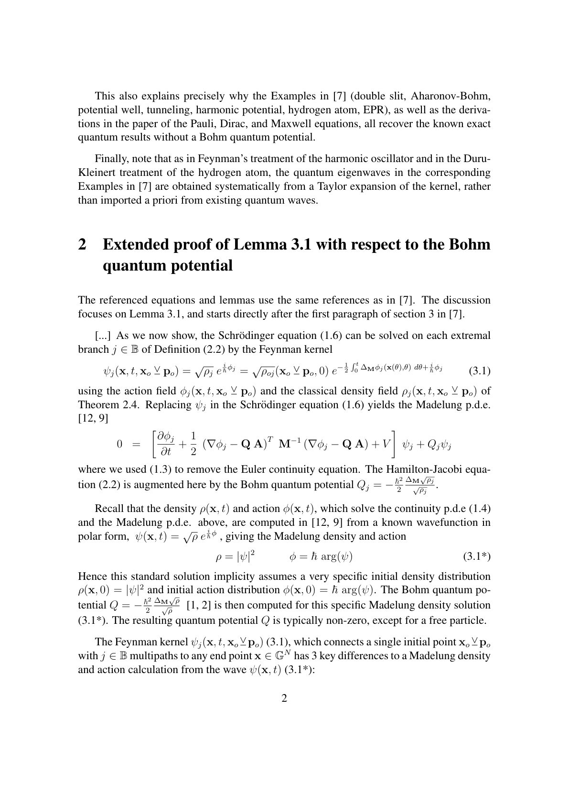
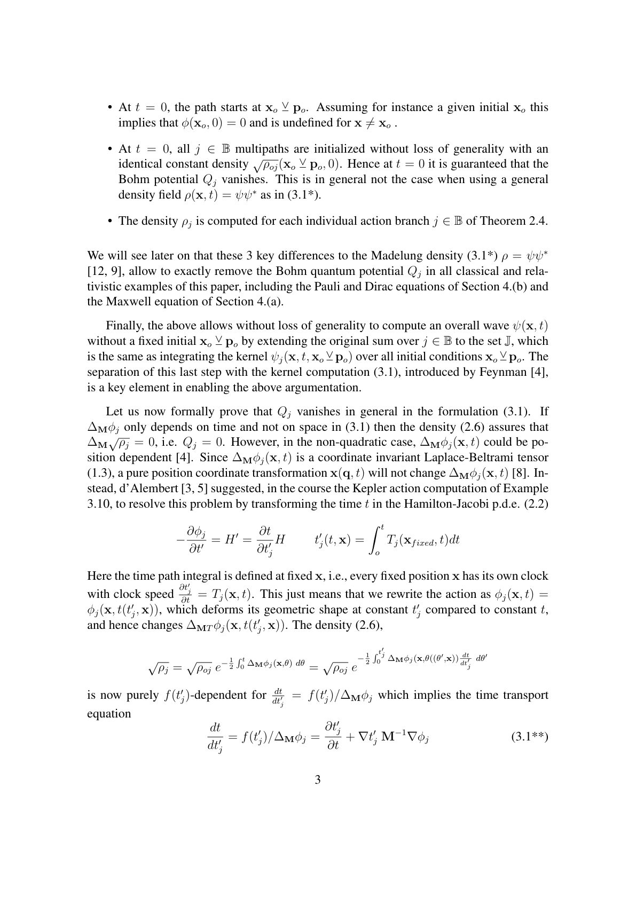
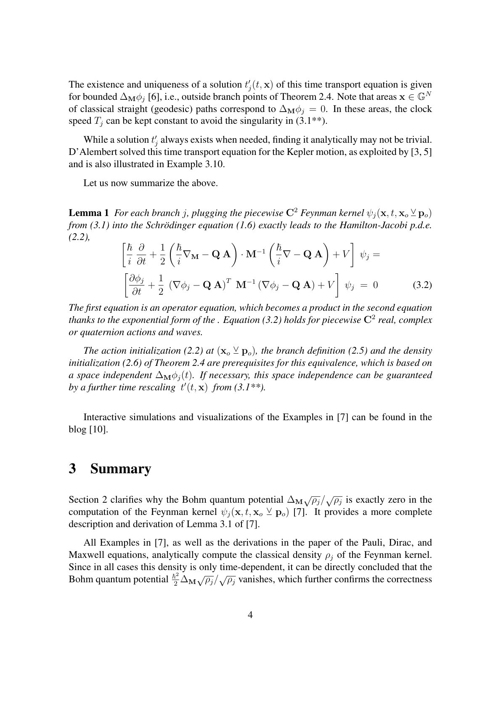
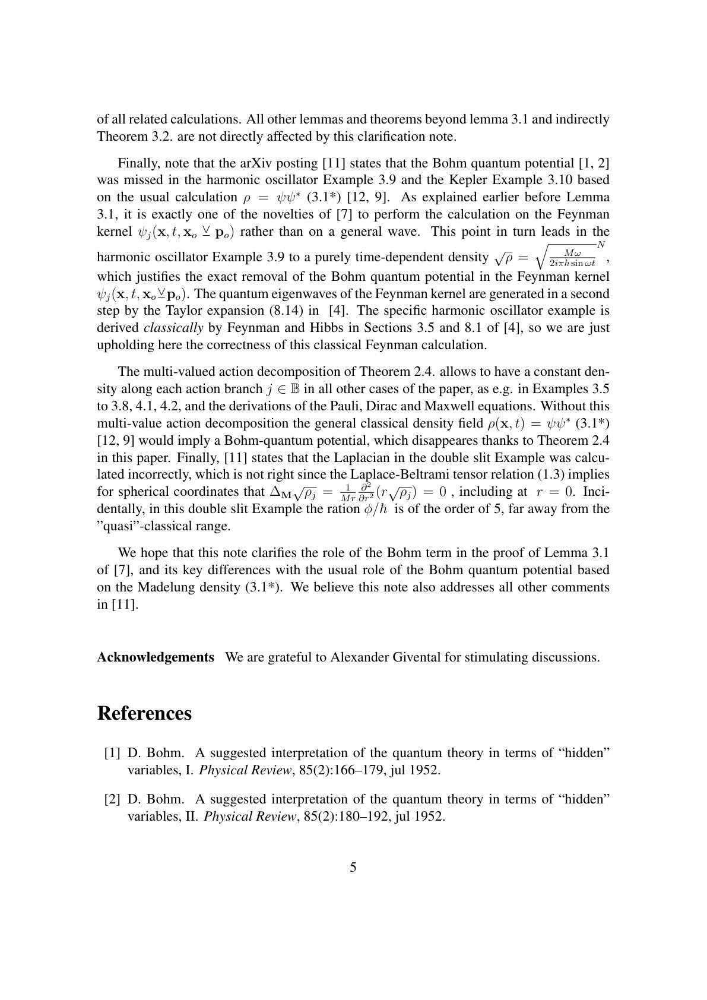
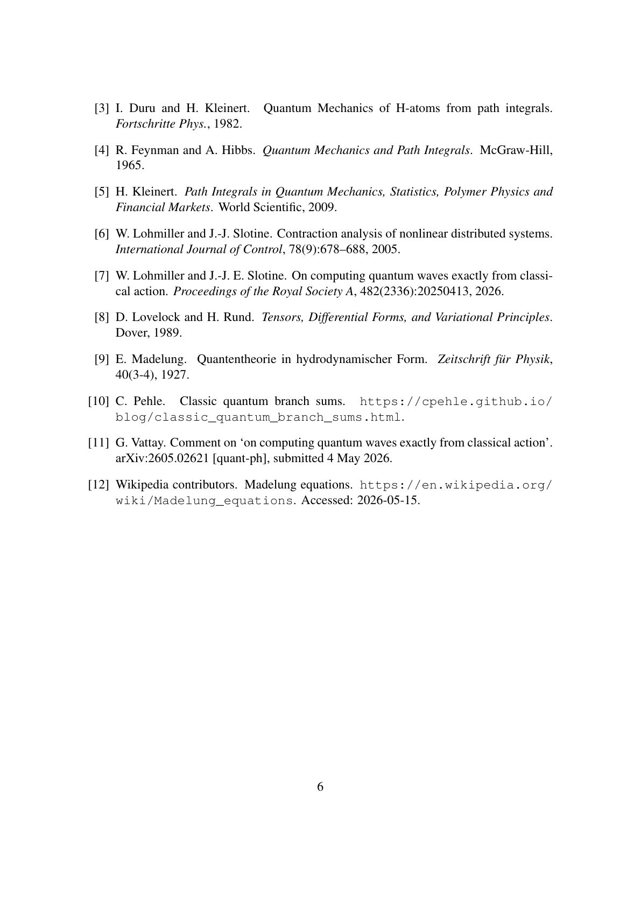
Summary. This paper provides a mathematical clarification for a method used to compute exact quantum waves from classical action. It proves that while the Bohm quantum potential is present in standard Madelung equations, it vanishes in this specific computational framework without affecting the final quantum wave. This resolves a technical dispute regarding the completeness of the underlying mathematical derivation.
Why it may be interesting. not directly relevant
Main problem. The paper addresses a technical critique claiming that a previous proof (Lemma 3.1) omitted the Bohm quantum potential term in the Madelung hydrodynamic equations.
Main result. The authors demonstrate that the Bohm quantum potential vanishes in their specific wave construction due to a specific initialization of density and action, and that the resulting overall wave remains independent of this computational initialization.
Method. The authors extend the previous proof by explicitly introducing the Bohm potential and using time rescaling to show the potential becomes zero when the Laplace-Beltrami operator is made space-independent.
Model / system. A mathematical framework for computing exact quantum waves from classical action using the Feynman kernel and Madelung partial differential equations.
Key observables. Action field (phi_j), classical density field (rho_j), and the resulting overall wave (psi).
Important parameters / regimes. The ratio of phi/hbar (noted as approximately 5 in a double-slit example); the regime is explicitly noted as being far from the quasi-classical limit.
Assumptions / limitations. The equivalence of operator and product forms of the Schrodinger equation relies on specific action and density initializations; the time transport solution is guaranteed only outside branch points.
Paper structure. The paper begins by addressing a specific technical critique regarding a missing Bohm potential, provides an extended mathematical proof to incorporate the term, explains the mechanism for its vanishing via time rescaling, and concludes by verifying the correctness of the approach using a double-slit example.
The recent arXiv posting [11], commenting on the paper [7], argues that the proof of Lemma 3.1 in [7] is missing the Bohm quantum potential [1, 2] of the Madelung p.d.e. [9]. This short technical note extends the proof of Lemma 3.1 to introduce a Bohm quantum potential explicitly, and then shows why this term can be assumed to be zero in the wave construction, without loss of generality. The continuity p.d.e. and the Hamilton-Jacobi p.d.e., extended by the Bohm potential, are undisputed. However, the actual action and density solutions depend on their initialization at t = 0. In [7], this initialization is motivated by the Feynman kernel [4], which is fundamentally different from the standard initialization of the Madelung solution [9]. This in turn leads to different action and density solutions, and explains why in one case the Bohm quantum potential disappears and in the other does not. The resulting overall wave, however, is independent of this computational initialization.
Authors: Luigi Camerano, Federico Bisti, Gianni Profeta
Type: theory · Category: strongly correlated electrons · PDF: https://arxiv.org/pdf/2605.21284v1
Analysis basis: full PDF text, analyzed in chunks
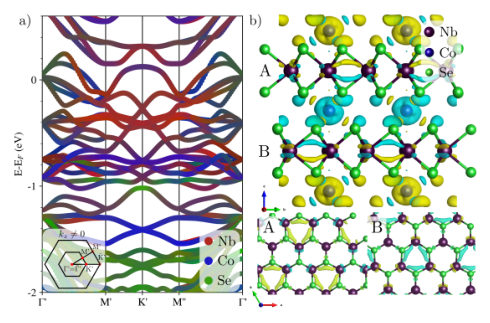
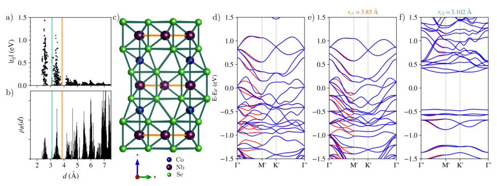
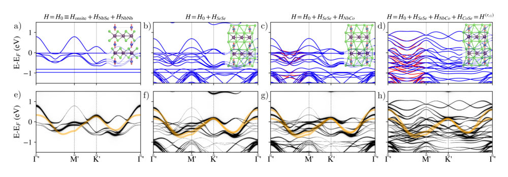
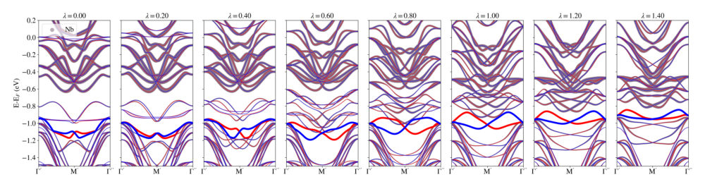
Summary. This paper identifies that the spin-splitting in the altermagnet Co1/4NbSe2 arises from indirect hybridization via ligands rather than direct interaction between magnetic ions. By using Wannier-based Hamiltonian engineering, the authors demonstrate how anisotropy is transferred from cobalt to the itinerant niobium bands. This provides a microscopic blueprint for designing new altermagnetic materials for spintronics.
Why it may be interesting. not directly relevant
Main problem. Identifying the microscopic, real-space origin of altermagnetic spin-splitting in the metallic state of the $g$-wave altermagnet Co1/4NbSe2.
Main result. The study reveals that altermagnetic spin-splitting is driven by ligand-mediated hybridization (specifically the Co-Se-Nb pathway) rather than direct magnetic-ion hopping.
Method. First-principles DFT calculations combined with Wannier Hamiltonian engineering and real-space decomposition of hopping channels.
Model / system. The $g$-wave altermagnet Co1/4NbSe2, an intercalated transition metal dichallycogenide, modeled using a Wannier-based tight-binding Hamiltonian.
Key observables. Spin-resolved band structures, spin polarization, magnetization density, and momentum-dependent spin-splitting.
Important parameters / regimes. Cutoff radii (rc1, rc2) for Hamiltonian truncation and a scaling parameter (lambda) for Co-Se hybridization strength.
Assumptions / limitations. The electronic structure can be accurately captured by a short-range tight-binding model derived from DFT.
Figures summary. Fig 1 shows atom-resolved band structure and magnetization density; Fig 2 displays hopping amplitudes and unit cell; Fig 3 illustrates the evolution of the spectrum as different hopping terms (Nb-Nb, Se-Se, Nb-Co, Co-Se) are included.
Paper structure. The paper introduces the altermagnetic system, presents DFT and Wannier-based electronic structure results, performs a real-space decomposition of the Hamiltonian to isolate hopping contributions, and concludes with the identification of the ligand-mediated mechanism.
Altermagnets host spin-split electronic bands despite zero net magnetization, opening new routes for spintronics beyond conventional ferromagnets. Going beyond symmetry-based classifications, which specify allowed terms but not their hierarchy, here we use first-principles calculations and Wannier Hamiltonian engineering to uncover the microscopic bonding contributions of altermagnetic spin splitting in the $g$-wave altermagnet Co$_{1/4}$NbSe$_2$. We show that the splitting is captured by a short-range tight-binding model, establishing its local origin. By selectively controlling hopping channels, we demonstrate that the dominant contribution arises not from direct magnetic-ion hopping, but from ligand-mediated hybridization that transfers anisotropy to itinerant states. This identifies ligand-assisted coupling as the key mechanism of altermagnetic spin splitting and provides a microscopic bridge between minimal models and symmetry guided first-principles material searches, enabling real-space design of altermagnetic functionality.
Authors: Andrew F. May, Christopher M. Pasco, V. O. Garlea, Karolina Gornicka, Matthias D. Frontzek, Xiaoping Wang, Pyeongjae Park, Andrew D. Christianson
Type: experiment · Category: strongly correlated electrons · PDF: https://arxiv.org/pdf/2605.21122v1
Analysis basis: full PDF text, analyzed in chunks
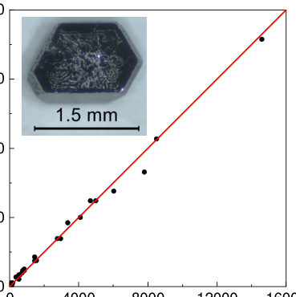
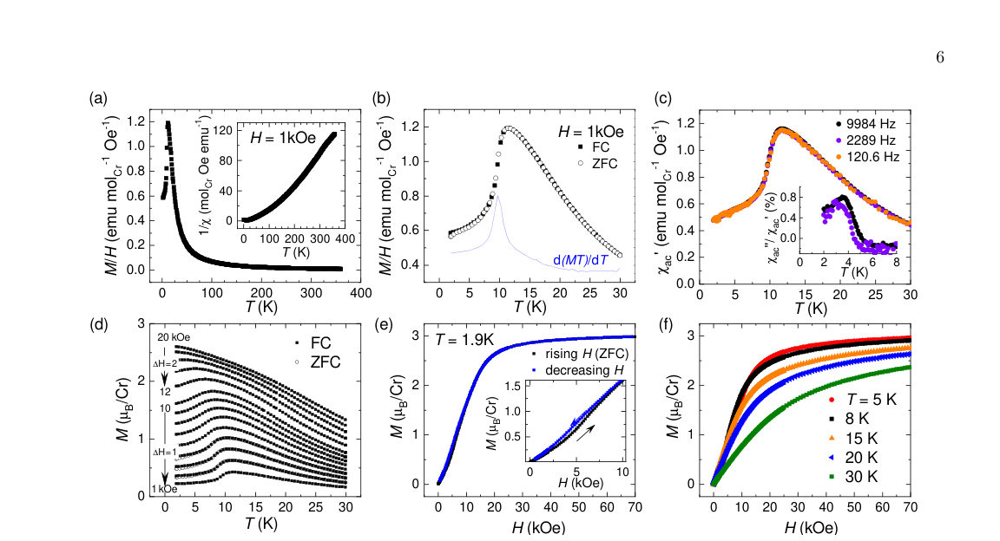
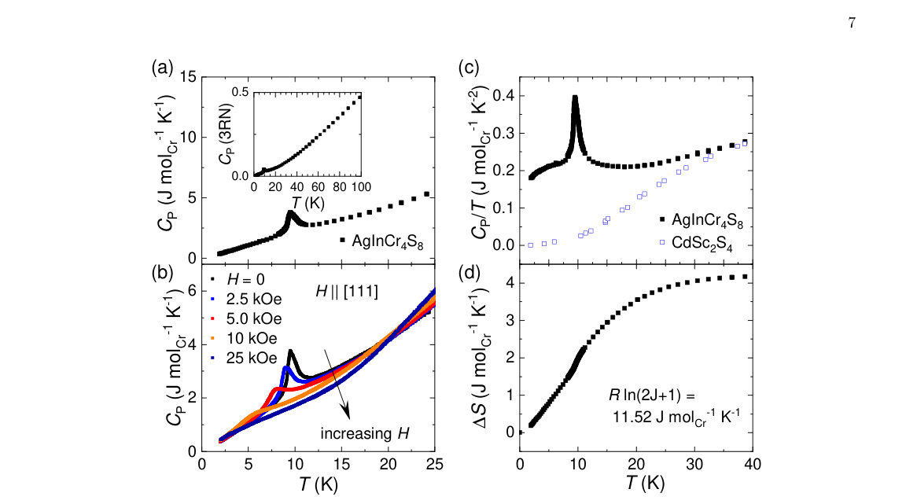
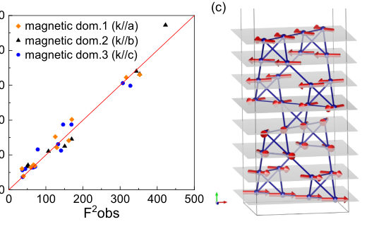
Summary. This paper characterizes the magnetic properties of the breathing pyrochlore spinel AgInCr4S8, revealing an incommensurate helical spin structure. It demonstrates how controlling sulfur stoichiometry during growth can transition the material from a spin-freezing regime to long-range antiferromagnetic order. The study provides key insights into how cation ordering and geometric frustration interact in these complex lattices.
Why it may be interesting. not directly relevant
Main problem. The study investigates the magnetism and structural ordering of the breathing pyrochlore spinel AgInCr4S8, specifically focusing on the impact of Ag/In cation ordering and growth conditions on its magnetic ground state.
Main result. The researchers confirmed an incommensurate helical magnetic ground state with a propagation vector k = (0, 0, 0.343) and identified that excess sulfur during crystal growth promotes long-range antiferromagnetic order.
Method. The study uses chemical vapor transport for crystal growth, followed by single-crystal X-ray and neutron diffraction, AC/DC magnetization, and specific heat capacity measurements.
Model / system. The system is a single-crystalline breathing pyrochlore spinel AgInCr4S8, characterized by a non-centrosymmetric lattice with alternating large and small Cr3+ tetrahedra driven by Ag/In ordering.
Key observables. Néel temperature (TN), propagation vector (k), magnetic entropy, magnetic moment (mu_eff), and breathing ratio (Br).
Important parameters / regimes. TN approx 9.6 K, Weiss temperature approx 56.8 K, propagation vector delta = 0.343, and breathing ratio Br = 1.065.
Assumptions / limitations. The magnetic model assumes a circular helix with equal sine and cosine amplitudes and assumes equal domain populations for the three symmetry-related domains.
Figures summary. Fig 2 shows structural/growth details; Fig 3 shows specific heat and entropy; Fig 4 presents a magnetic phase diagram; Fig 5 displays neutron diffraction intensity maps and a helical structure schematic; Fig 6 shows the temperature dependence of the incommensurability parameter.
Paper structure. The paper begins with crystal growth and structural characterization, moves to magnetic property measurements (magnetization and specific heat), presents neutron diffraction results for the magnetic structure, and concludes with a discussion on growth-dependent stability and phase diagrams.
Single crystals of \ce{AgInCr4S8} were grown by chemical vapor transport and crystallographic ordering of Ag/In that results in a breathing pyrochlore motif of Cr$^{3+}$ was verified by x-ray and neutron diffraction. Long-range antiferromagnetic order is observed below a Néel temperature of $T_{\mathrm N}$ $\approx$ 9.6 K. The magnetic properties are characterized using ac and dc magnetization, specific heat capacity, and single crystal neutron diffraction measurements. The specific heat data are characterized by a small lambda anomaly near 9.5 K and the estimated magnetic entropy reaches $\approx$ $\frac{1}{3}$ of the expected value by 3$T_{\mathrm N}$, suggesting significant short-range order in the paramagnetic phase. Single crystal neutron diffraction evidences an incommensurate spin structure with propagation vector $\textbf{\textit{k}}$ = (0,0,$δ$) and $δ$ = 0.343 at 5 K. The minimal model that accounts for the data consists of ferromagnetic layers of Cr atoms, with magnetic moments lying in the plane of the layers and modulating in the perpendicular direction to form a helical structure propagating along $\textbf{\textit{k}}$. This study represents a rare investigation of single crystals within the family of breathing pyrochlore materials.
Authors: Lorenzo Benfatto, Omar Zanusso
Type: theory · Category: statistical mechanics · PDF: https://arxiv.org/pdf/2605.21326v1
Analysis basis: full PDF text, analyzed in chunks
Summary. This paper proves that the Renormalization Group flow for long-range, non-unitary scalar field theories follows a gradient structure up to the third loop order. By matching the RG-derived A-function with the sphere free-energy, the authors provide a perturbative proof of the F-theorem for these models. This establishes a fundamental connection between the flow of couplings and the thermodynamic properties of the theory at fixed points.
Why it may be interesting. not directly relevant
Main problem. Investigating whether the Renormalization Group (RG) flow in non-unitary, long-range quantum field theories possesses a gradient structure and satisfies monotonicity theorems like the A-theorem and F-theorem.
Main result. The authors demonstrate that the RG flow of long-range multiscalar phi^4 theory satisfies a gradient structure up to the third loop order and show that the A-function can be matched to the sphere free-energy, providing a perturbative proof of the F-theorem at leading order.
Method. The study employs perturbative RG analysis up to the third loop order, conformal perturbation theory on a d-dimensional sphere, and Mellin-Barnes integral representations for evaluating Feynman diagrams.
Model / system. The model is a long-range multiscalar phi^4 theory characterized by power-law interactions, including specific cases like the long-range vector O(N) and hypercubic H_N models.
Key observables. Beta functions, A-function (conformal anomaly), F-function (sphere free-energy), Zamolodchikov's metric (C_IJ), and the RG metric (G_IJ).
Important parameters / regimes. Spacetime dimension d, interaction parameter s (where s = (d+epsilon)/2), coupling constants lambda, and the epsilon expansion parameter.
Assumptions / limitations. The analysis is restricted to the third loop order in perturbation theory and assumes the validity of the epsilon expansion near the critical dimension.
Figures summary. Not specified in the provided notes.
Paper structure. The paper begins by defining the gradient flow problem, proceeds to analyze the RG flow and beta functions of the long-range phi^4 theory up to three loops, computes the sphere free-energy and the metric on theory space, and concludes by matching these quantities to establish the F-theorem.
Unitarity is often a crucial ingredient in establishing theorems -- such as the $A$-theorem -- on the irreversibility of the renormalization group flow. The strongest thesis of this type of theorems would be that there exists a scalar function $A$ and a positive definite metric $G_{IJ}$ in the space of couplings such that the renormalization group flow satisfies a gradient equation, $\partial_I A= G_{IJ}β^J$, in which case $A$ is locally monotonic along the flow. In this paper we consider the long-range multiscalar $φ^4$ theory, which is a nonunitary model that is believed to be conformally invariant at fixed points, and show that its renormalization group flow satisfies the gradient structure up to the third loop order in the coupling. We also show that $A$ and $G_{IJ}$ can be matched to the leading nontrivial order with the sphere free-energy $\tilde{F}$ and Zamolodchikov's metric $C_{IJ}$ of the corresponding conformal theory concentrating on the examples of the long-range vector $O(N)$ and hypercubic $H_N$ models. Our results imply a perturbative proof of the $\tilde{F}$-theorem at the leading nontrivial order. We conclude the paper discussing briefly whether this result should hold to the next orders in perturbation theory.
Authors: Antoine Maillard, Sebastian Goldt
Type: theory · Category: disordered systems and neural networks · PDF: https://arxiv.org/pdf/2605.21402v1
Analysis basis: full PDF text, analyzed in chunks
Summary. The paper provides a mathematical framework to show that generative models can learn to match the general statistics of a dataset (convergence) without necessarily recovering its key structural features (latent factors). It identifies a clear decoupling between these two stages of learning, which is crucial for understanding the true capabilities of diffusion models.
Why it may be interesting. not directly relevant
Main problem. Investigating the transition from memorization to generalization in generative models and determining if model convergence is a reliable proxy for recovering underlying data structures.
Main result. Generalization decomposes into two decoupled objectives: matching the bulk of the data distribution (convergence) and recovering principal latent factors (subspace recovery), with the former occurring at lower sample complexity.
Method. Analytical characterization using Random Matrix Theory, specifically the Marchenko-Pastur law and the BBP transition, applied to spiked Wishart models and extended to power-law spectra.
Model / system. Linear generative models using a Gaussian process where the covariance is a spiked Wishart model (Sigma = I + beta * u * u^T), later extended to power-law spectral models and real-world datasets like CelebA and ImageNet.
Key observables. Memorization (m), Convergence overlap (q), Subspace recovery (Q), and Rotated subspace overlap (Q*).
Important parameters / regimes. Sample complexity ratio (gamma = n/d), signal-to-noise ratio (beta), regularization strength (sigma), and power-law exponent (alpha).
Assumptions / limitations. The primary analytical results rely on Gaussian approximations for both the data distribution and the generative models, and focus on the high-dimensional limit.
Figures summary. Figure 1 illustrates the three regimes (memorization, convergence, latent recovery) and the evolution of order parameters; Figure 3 shows the effectiveness of the rotated metric Q* in identifying phase transitions in power-law data.
Paper structure. The paper introduces the problem of memorization vs. generalization, develops an exact theory for linear Gaussian models using RMT, extends the framework to power-law spectra to account for real-world image statistics, and validates the findings using diffusion models and empirical datasets.
Generative neural networks learn how to produce highly realistic images from a large, but finite number of examples - or do they simply memorise their training set? To settle this question, Kadkhodaie, Guth, Simoncelli and Mallat (ICLR '24) trained diffusion models independently on disjoint subsets of a dataset and showed that they converge to nearly the same density when the number of training images is large enough. This result raises two basic questions: how much data do you need for convergence, and what does convergence capture about learning the data distribution? Here, we address these questions by providing an exact analytical characterisation of the transition from memorisation to generalisation in linear generative models. We find that these models memorise at small load, while convergence emerges continuously when the number of samples is linear in the input dimension. Strikingly, we find that convergence is insensitive to recovery of the principal latent factors of the data, which are recovered in a sharp transition. After extending our approach to data with power-law spectra, we find the same distinction between convergence and latent recovery in our experiments with convolutional denoisers and in the data of Kadkhodaie et al. We thus show that generalisation in generative models decomposes into at least two distinct objectives: matching the bulk of the data distribution and recovering the principal latent factors. These objectives correspond to two different distances between true and learnt data distribution, and only the first one is captured by convergence.
Authors: Dario Nichetti, Alessio Zaccone
Type: theory · Category: disordered systems and neural networks · PDF: https://arxiv.org/pdf/2605.21021v1
Analysis basis: full PDF text, analyzed in chunks
Summary. This paper provides a microscopic molecular basis for the nonlinear viscoelasticity observed in polymers during large-amplitude oscillations. It reinterprets the Nonlinearity Index as a measure of how structural constraints break down, linking polymer physics to the broader theory of nonaffine deformations in glasses.
Why it may be interesting. not directly relevant
Main problem. Bridging the gap between tube-based polymer dynamics and the microscopic nonaffine theory of disordered elasticity to explain the origin of nonlinearities in Large-Amplitude Oscillatory Shear (LAOS).
Main result. The authors establish that the Nonlinearity Index (NLI) is a dynamic nonaffinity parameter measuring the transfer of elastic response from coherent tube elasticity to nonlinear relaxation channels, predicting a theoretical upper bound of |NLI|max = 3.
Method. The study uses a multiscale framework combining Fourier-transform rheology, nonaffine lattice dynamics, and a constraint-counting argument based on the eight-chain network model.
Model / system. The physical system consists of entangled polymer melts and concentrated solutions, modeled using a combination of Doi-Edwards tube theory and nonaffine deformation theory for amorphous solids.
Key observables. Nonlinearity Index (NLI), first-harmonic storage modulus (G'1), nonlinear modulus (G'NL), and the tube survival fraction (q).
Important parameters / regimes. Characteristic strain amplitude (gamma_c), maximum nonlinearity (Nmax), crossover exponent (m), and the nonaffine isostatic threshold.
Assumptions / limitations. The framework assumes a mapping between tube constraint loss and cage-breaking, and uses an eight-chain representation to estimate mechanical coordination.
Figures summary. The paper includes experimental master curves for the NLI, scaling plots of the modulus components, and a summary table of effective scaling regimes.
Paper structure. The paper introduces the problem of connecting tube theory to nonaffine elasticity, develops a mathematical framework for LAOS harmonics, proposes a crossover scaling law, performs experimental fitting, and concludes with a theoretical derivation of the NLI upper bound.
We develop a molecularly motivated framework connecting large-amplitude oscillatory shear (LAOS) nonlinearities in entangled polymers to frequency-dependent nonaffine relaxation in disordered solids. The central idea is that the first harmonic in LAOS measures the residual phase-locked elastic response, whereas the higher harmonics encode the Fourier signature of strain-dependent nonaffine relaxation. The finite-amplitude modulus is interpreted as a local tangent stiffness of the evolving microstructure, in the spirit of elastoplastic and incremental nonaffine models. For entangled polymers, the analogue of the decreasing coordination number in cage-breaking theories of glass mechanics is identified not with the tube-orientation tensor itself, but with the fraction of surviving tube constraints. This distinction leads naturally to a crossover description controlled by a characteristic strain amplitude $γ_c$, rather than by universal fixed power-law exponents. The fitted value $N_{\max}\simeq1.72$ indicates that the present experimental data approach a strong but not fully saturated nonlinear state, remaining below the ideal limiting value predicted for complete constraint collapse. Finally, a constraint-counting argument combining an eight-chain affine network representation with the central-force nonaffine isostatic threshold gives a limiting estimate $|\mathrm{NLI}|_{\max}=3$. The results support the interpretation of the NLI as a Fourier-resolved dynamic nonaffinity parameter and establish a bridge between tube-based polymer dynamics, LAOS harmonic analysis, elastoplastic rheology, and microscopic nonaffine lattice dynamics.
Authors: Zhihang Li, Bo Zhao, Chuanbing Han, Jie Zhao, Jinchen Xu, Guoqiang Shu, Yimin Gao, Woji He, Zheng Shan
Type: theory · Category: quantum information and computing · PDF: https://arxiv.org/pdf/2605.21380v1
Analysis basis: full PDF text, analyzed in chunks
Summary. This paper introduces a new framework and algorithm for designing more efficient quantum oracles. By using a hierarchical recursive model, the authors can systematically balance the use of auxiliary qubits against circuit depth, significantly reducing the computational cost of essential quantum algorithms.
Why it may be interesting. not directly relevant
Main problem. The optimization of quantum oracle construction to reduce resource overhead, specifically minimizing quantum gate complexity and circuit depth while managing the trade-off between qubit count and depth.
Main result. The proposed ASDT algorithm is theoretically proven to achieve optimal gate counts for a given number of qubits and experimentally reduces average quantum circuit depth by 53.99% compared to the W-cycle approach.
Method. The authors introduce the Hierarchical Recursive Synthesis-Evaluation (HRSE) model to formally describe oracle architectures and the Adaptive Space-depth Trade-off (ASDT) algorithm to optimize their structure.
Model / system. The work focuses on Boolean functions f: {0, 1}^n -> {0, 1} represented as quantum oracles, using a hierarchical tree-based model (HRSE) where nodes represent computation units and edges represent recursive containment.
Key observables. Quantum gate complexity (gate count), quantum circuit depth, and the optimization ratio compared to baseline methods.
Important parameters / regimes. Number of variables (n), number of auxiliary qubits (k/m), recursion depth (level), and the trade-off between space (qubits) and depth (time).
Assumptions / limitations. The model assumes the monotonicity of node size and that nodes with size 1 or 2 must be leaf nodes; it also focuses on the organization of functions rather than specific function encoding.
Figures summary. Figure 1 shows oracle conversion and qubit multiplexing; Figure 2 illustrates the HRSE model; Figure 3 plots node depth vs. function count; Figure 4 shows the ASDT algorithm execution; Figure 5 displays the space-depth trade-off bar graph.
Paper structure. The paper introduces the problem of oracle overhead, presents the HRSE mathematical model, details the ASDT algorithm and its optimality proof, provides experimental comparisons against the W-cycle approach, and discusses future optimization directions.
Quantum computing has demonstrated its significant advantage over supercomputing for specific applications and shown promising prospect, such as machine learning, cryptography, finance, etc.. Quantum oracles are very common in many quantum algorithms and oracle resource consumption directly affects algorithm performance. However, existing oracle designs often exhibit high resource overhead and limited compatibility. Moreover, structured description tools and complexity analysis methods are lacked. In this work, we introduces a Hierarchical Recursive Synthesis-Evaluation (HRSE) model, enabling formal description and precise quantum gate complexity analysis of oracles. Based on this model, we propose an Adaptive Space-depth Trade-off (ASDT) algorithm for generating oracle structures under a fixed qubit constraint. We provide a theoretical proof showing that the ASDT algorithm achieves the optimal gate count for a given number of qubits. Experimental results show that the ASDT algorithm reduces the average quantum circuit depth by 53.99% compared with the W-cycle approach, with the number of variables being 10, 15, and 20, respectively.
Authors: Fabien Mortier, Sylvian Cadars, Olivier Masson, Mauro Boero, Guido Ori, Yun Wang, Samuel Bernard, Assil Bouzid
Type: both · Category: disordered systems and neural networks · PDF: https://arxiv.org/pdf/2605.20358v1
Analysis basis: full PDF text, analyzed in chunks
Summary. This paper presents a new machine learning interatomic potential that enables large-scale simulations of the thermal evolution of polymer-derived ceramics. It successfully captures the phase separation of carbon into graphene-like sheets within an amorphous SiCN matrix, providing a microscopic view of how structural defects mediate the formation of stable aromatic networks.
Why it may be interesting. not directly relevant
Main problem. The difficulty of modeling the atomic-scale evolution and phase separation mechanisms of carbon domains within amorphous silicon carbonitride (SiCNH) ceramics during thermal processing.
Main result. The development of a highly accurate machine learning interatomic potential (MACE) that reveals how carbon domains nucleate and grow into graphene-like sheets via defect-mediated processes involving 5- and 7-member rings.
Method. Development of an equivariant machine learning interatomic potential (MACE) trained on a diverse database of 9,000+ configurations, followed by large-scale molecular dynamics simulations (8,000 atoms) and thermal annealing cycles.
Model / system. The physical system is a polymer-derived silicon carbonitride hydride (Si-C-N-H) ceramic, characterized by an amorphous SiCN matrix and a separate free-carbon phase.
Key observables. Atomic pair distribution functions (PDFs), structural motifs (carbon ring sizes, dimers, chains, and sheets), and local coordination numbers (Si, C, N).
Important parameters / regimes. Simulation scales of 8,000 atoms and nanosecond timescales; thermal annealing temperatures up to 2200 K; MLIP energy RMSE of 12.4 meV/atom.
Assumptions / limitations. The use of a DFT-based training set (PBE functional) assumes that the accuracy of the MLIP is sufficient to capture the complex chemical reactivity and long-range structural organization of the amorphous network.
Figures summary. The figures illustrate the structural diversity of the training database, the thermal annealing protocols, the evolution of carbon structural motifs (rings and chains), and the validation of the model against experimental pair distribution functions.
Paper structure. The paper identifies the limitations of previous computational methods, details the construction of a diverse training database and the MACE potential, describes the large-scale MD simulation protocols, presents the results of phase separation and carbon growth, and validates the findings against experimental scattering data.
Polymer-derived ceramics combine the thermal stability of ceramics with the versatile properties of carbon domains, but modeling their atomic-scale evolution during processing remains elusive due to the limitations of traditional computational methods. To address this issue, here we develop and apply a machine learning interatomic potential for silicon carbonitride-based (Si-C-N-H) systems, trained on a diversified database of over 9000 configurations -including amorphous models, high-temperature states, surfaces, and crystal structure predictions - to capture the full complexity of these materials. This potential enables large-scale molecular dynamics simulations of 8000-atom systems revealing the atomic-scale evolution of the polymer-derived ceramic during thermal treatment. A key result of this work is the occurrence of a phase separation where carbon domains progressively nucleate from the amorphous SiCN matrix during thermal processing, forming distinct graphene-like sheets while preserving the integrity of the ceramic network. The resulting models reproduce the experimental atomic pair distribution functions with exceptional fidelity, validating our approach and providing microscopic explanations for the material unique combination of ceramic and graphitic properties. In this process, defective 5- and/or 7-member carbon rings, mediate the transformation to stable 6-member aromatic structures. These findings offer new atomic-scale insights into the thermal stability and structural transformation pathways of polymer-derived ceramics, while our methodology opens avenues for studying complex amorphous systems with first-principles accuracy at experimentally relevant scales.
Authors: Thomas Kögel, Alessio Caddeo, Amelie Pitters, Francesca Paoletti, Lorenzo Crippa, Giorgio Sangiovanni, René Meyer, Johanna Erdmenger
Type: theory · Category: strongly correlated electrons · PDF: https://arxiv.org/pdf/2605.20321v1
Analysis basis: full PDF text, analyzed in chunks
Summary. This paper uses a semi-holographic framework to explain the poles-zeros duality observed in the transition to Mott-insulating phases. It shows that the zeros in the Green's function (Luttinger surfaces) arise from the poles of the self-energy, which are linked to collective excitations in a strongly coupled sector. The study provides a clear mapping between the insulating and metallic phases through the choice of holographic quantization.
Why it may be interesting. not directly relevant
Main problem. Understanding the physical mechanism behind the poles-zeros duality in the Green's functions of Mott insulators and the emergence of Luttinger surfaces.
Main result. The authors demonstrate that a poles-zeros duality in the self-energy, driven by a bulk scalar coupling, induces an approximate duality in the single-particle Green's function, effectively mapping the Mott-insulating phase to a metallic phase.
Method. A semi-holographic approach using the AdS/CFT correspondence, involving the calculation of retarded Green's functions in an AdS Reissner-Nordstrom black hole background and analyzing the transition between standard and alternative quantizations.
Model / system. A semi-holographic model consisting of a fundamental Dirac fermion coupled to a strongly interacting large-N sector, where the latter is described by a 3+1D gravitational theory with a non-minimal scalar coupling.
Key observables. Retarded Green's function (G_R), self-energy (Sigma_R), spectral function (rho), and the determinant of the Green's function.
Important parameters / regimes. Non-minimal scalar coupling parameter (eta), large-N limit, chemical potential (mu), and temperature (T).
Assumptions / limitations. The large-N limit is used to treat the strongly coupled sector as a bath and neglect backreaction on the gravitational background; the probe approximation is applied to the bulk fermion.
Figures summary. Figure 1 shows the self-energy magnitude; Figure 2 compares the determinant of the Green's function; Figure 3 shows the determinant at k=0 identifying poles and zeros; Figure 4 relates the determinant to the self-energy; Figure 5 shows the Mott gap size vs eta; Figures 6 and 7 show the real and imaginary parts of the Green's function in the insulating and metallic regimes, respectively.
Paper structure. The paper introduces the problem of Green's function zeros, defines the semi-holographic model and its coupling, derives the analytical poles-zeros duality for the self-energy via quantization schemes, performs numerical analysis of the spectral functions and phase transitions, and discusses the physical implications and limitations.
Inspired by the poles-zeros duality of Green's functions that appears in transitions into Mott-insulating phases in strongly correlated condensed matter systems, we propose a semi-holographic approach to Mott insulators. In this model, a fundamental fermion is coupled to a large-$N$, strongly interacting sector that generates a self-energy for the fundamental fermion's Green's function. This coupling amounts to a hybridization of the fundamental fermion with a strongly correlated fermionic composite. Within the holographic framework, at large $N$, the Green's function of the composite fermion naturally exhibits a poles-zeros duality. Zeros of the Green's function are caused by the poles of the self-energy that correspond to collective many-body excitations of the holographic strongly interacting sector. We calculate the spectral function of the fundamental fermion, from which we characterize the semi-holographic metallic and the Mott-insulating phases. In addition to the new physical interpretation of the zeros, our analysis yields a well-defined picture of the poles-zeros duality in terms of the freedom to choose between standard and alternative quantization in the strongly coupled sector.
Authors: Guilherme E. L. Pexe, Lucas A. M. Rattighieri, Leandro A. Passos, Danilo S. Jodas, Douglas Rodrigues, Felipe F. Fanchini, João P. Papa, Kelton A. P. Costa
Type: both · Category: quantum information and computing · PDF: https://arxiv.org/pdf/2605.20637v1
Analysis basis: full PDF text, analyzed in chunks
Summary. This paper proposes a quantum-inspired method to optimize the selection of prototypes in the Optimum-Path Forest classifier. By reformulating the Minimum Spanning Tree problem as a PUBO task and using the FALQON algorithm, the authors achieve performance parity with classical algorithms while improving scalability for quantum hardware. This demonstrates a potential path for using quantum optimization to enhance machine learning tasks.
Why it may be interesting. not directly relevant
Main problem. The scalability of the Optimum-Path Forest (OPF) classifier is limited by the quadratic complexity of computing the Minimum Spanning Tree (MST) for large datasets. The authors seek to overcome this computational burden using a quantum-inspired optimization approach.
Main result. The proposed PUBO formulation using the FALQON algorithm achieves classification accuracies comparable to the classical Prim's algorithm while reducing the required number of qubits and auxiliary variables.
Method. The authors reformulate the MST problem as a Polynomial Unconstrained Binary Optimization (PUBO) task and apply the Feedback-Based Quantum Optimization (FALQON) algorithm for Hamiltonian minimization.
Model / system. The model is a supervised OPF classifier where training samples are represented as nodes in a fully connected graph with edge weights based on Euclidean distances. The problem is mapped to a PUBO Hamiltonian (H_MST) consisting of a penalty term to ensure a valid tree structure and a cost term to minimize total edge weight.
Key observables. Success rate of finding the ground state, frequency of the true solution in the top 10 most probable states, energy evolution (expectation value of the Hamiltonian), and probability distribution of the computational basis states.
Important parameters / regimes. Penalty parameters A and B, time step delta_t = 0.01, and 10,000 layers for FALQON convergence.
Assumptions / limitations. The study assumes that the MST can be effectively captured by a PUBO formulation and relies on small-scale dataset subsets for simulation due to current hardware/computational constraints.
Figures summary. Figure 1 shows the end-to-end process flowchart; Figure 2 displays a sample graph and its MST; Figure 3 shows energy decrease and probability distributions; Figure 4 compares QUBO results with different driver strategies; Figure 5 compares PUBO results.
Paper structure. The paper introduces the OPF framework, proposes a PUBO formulation for MST, describes the FALQON algorithm and its implementation, presents experimental results on various datasets comparing accuracy and execution time, and discusses limitations regarding scalability and local minima.
The Optimum-Path Forest is a graph-based framework for designing classifiers that exploit inter-sample connectivity. A particular variant constructs decision boundaries based on prototypes computed by a Minimum Spanning Tree (MST) over the training data, which might become prohibitive for large-scale datasets. In this context, Quantum Machine Learning has emerged as a promising approach to overcome the high computational burden of combinatorial problems. We propose a quantum-inspired approach for prototype selection in OPF classifiers by reformulating the MST problem as a Polynomial Unconstrained Binary Optimization (PUBO) task and further employing the Feedback-Based Quantum Optimization (FALQON) algorithm for Hamiltonian minimization. The PUBO formulation reduces the need for qubits and eliminates the need for auxiliary variables, thereby addressing scalability constraints in current quantum hardware. Experiments on real-world datasets demonstrate that the FALQON-optimized MST achieves accuracies comparable to those of the classical Prim's algorithm while maintaining prototype quality. While FALQON occasionally reached local minima, it did not significantly impact the accuracy of the prototype selection process.
Authors: Adam Innan, Mansour El Alami, Nouhaila Innan, Muhammad Shafique, Mohamed Bennai
Type: experiment · Category: disordered systems and neural networks · PDF: https://arxiv.org/pdf/2605.21164v1
Analysis basis: full PDF text, analyzed in chunks
Summary. The paper introduces Q-SYNTH, a hybrid quantum-classical GAN designed to augment imbalanced datasets for fraud detection. It demonstrates that a quantum generator can produce synthetic samples that better match the real data distribution than classical GANs while remaining effective for downstream classification tasks.
Why it may be interesting. not directly relevant
Main problem. Extreme class imbalance in credit card fraud detection causes supervised learners to favor the majority class, leading to poor recall for rare fraudulent transactions.
Main result. Q-SYNTH provides a favorable compromise between distributional fidelity and downstream performance, reducing marginal distribution mismatch compared to classical GANs while maintaining competitive fraud detection utility.
Method. A hybrid quantum-classical Generative Adversarial Network (GAN) where a parameterized quantum circuit (PQC) acts as the generator and a classical neural network acts as the discriminator.
Model / system. A hybrid architecture using a 6-qubit variational quantum circuit with a StronglyEntanglingLayers ansatz, implemented via PennyLane, to synthesize tabular fraud data.
Key observables. Kolmogorov-Smirnov (KS) statistics, Wasserstein distances, AUC-ROC for detectability, and downstream metrics including Precision, Recall, and F1-score.
Important parameters / regimes. Synthetic-to-real injection ratios (10%, 25%, 50%, 100%), dimensionality reduction to d=4, and adaptive regularization parameters (noise scale, label smoothing, and dropout).
Assumptions / limitations. Assumes data can be effectively represented in a bounded, low-dimensional continuous space; assumes the quantum generator's parameter efficiency is comparable to classical counterparts.
Figures summary. Figure 1 shows the trade-off between similarity and utility across different augmentation methods; Figure 2 outlines the end-to-end Q-SYNTH pipeline; Figure 3 details the quantum circuit architecture; Figures 4 and 5 show training loss trajectories; Figure 6 presents the ROC curve for synthetic sample detectability.
Paper structure. The paper introduces the problem of class imbalance, proposes the Q-SYNTH hybrid framework, details the architecture and preprocessing pipeline, describes the adversarial training and regularization methods, presents quantitative results on distributional fidelity and downstream detection, and concludes with scaling analysis and limitations.
Credit card fraud detection is fundamentally challenged by extreme class imbalance, where fraudulent transactions are rare yet operationally critical. This imbalance often biases supervised learners toward the legitimate class, leading to high overall accuracy but weaker fraud-class recall and F1-score. This paper introduces Q-SYNTH, a hybrid classical--quantum generative adversarial framework in which a parameterized quantum circuit serves as the generator and a classical neural network serves as the discriminator. Q-SYNTH is designed for minority-class fraud synthesis in tabular data and is evaluated along two dimensions: statistical fidelity to real fraud samples and downstream performance for fraud detection. To this end, generated samples are assessed using distributional similarity measures based on Kolmogorov-Smirnov statistics and Wasserstein distances, real-vs-synthetic detectability measured by AUC-ROC, and downstream classification performance across both quantum and classical classifiers. Under the reported protocol, Q-SYNTH reduces marginal distribution mismatch relative to a classical GAN baseline while maintaining competitive downstream fraud-detection performance. Although SMOTE achieves the strongest feature-wise similarity and the classical GAN attains the highest downstream performance in several settings, Q-SYNTH offers a favorable compromise between distributional fidelity and downstream performance, supporting the feasibility of hybrid quantum augmentation for imbalanced fraud detection.
← Index · ← Previous · Next →